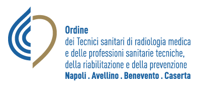

La risonanza magnetica in prima persona
360°
Video a 360°: guardati intorno muovendo il telefono o trascinando. Tocca per iniziare.
Nel visore (schermo diviso)
Sullo schermo
Ricentra
Esci
Ruota il telefono in orizzontale e inseriscilo nel visore.